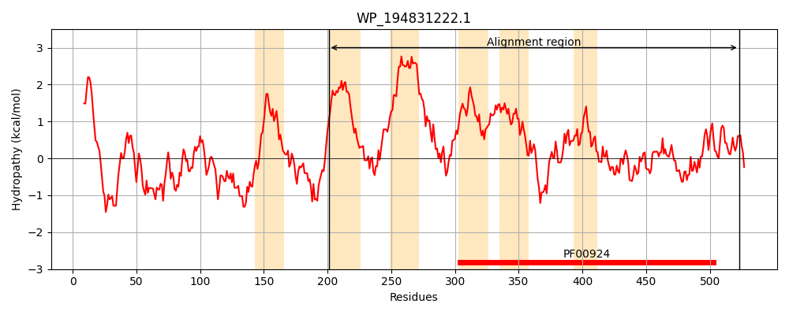
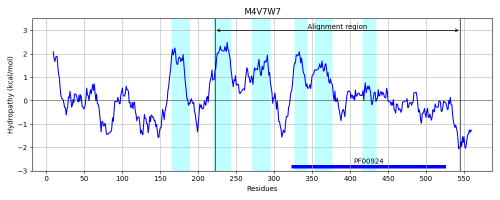
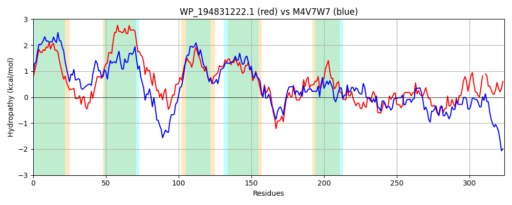

Hit Accession: M4V7W7
Hit TCID: 1.A.23.1.4
Hit Description: gnl|BL_ORD_ID|6369 gnl|TC-DB|M4V7W7|1.A.23.1.4 Uncharacterized protein OS=Bdellovibrio exovorus JSS GN=A11Q_300 PE=4 SV=1
Mach Len: 324
e:0.000000
Query TMS Count : 6
Hit TMS Count: 6
TMS-Overlap Score: 6.300000
Predicted Substrates:None
BLAST Alignment:
Score: 563 , Bit scores: 221 bits, E-value: 4.0e-65, Alignment length: 324, Percentage identity: 35
Query: 201 VRLYAVLVILVGMLASYLWLSWAFSLFPWTRVWSESLGDWSLDVIRDLSLSIVASLPGLMIVVLIFLITWLIIRLVKVALDQVAAGRIQVPGIHPETVSATRRLISVVIWLFALSAAYPFLPGANSLAFKGISVFFGLMLTLGSTGVMTHAMSGLVLIYSRALRKGDWIRLADNEGQVSEIGVLATKILTRENYIVTVPNAVVVSGKIINLSAESTDGGFNLTTSVTIGYDTPWRQVHALLELAARRTPGVDQQIAPIVRKLGLLDWYTAYELQVRLLPTTKLPDGRNALHSSIIDVFNEFGVQIMSPNF-VMQPKAAVVVPQE 523
V L + + +++ ++ Y+++ FS FP T W+ L D+ L+ + + +V LP L VV+I L+T +++++ +V GR+Q P H E T +L+ V++ A A+P+LPG+ S AF+G+SVF GL+++ GS+ +++ +SG+V+ Y R + GD +++AD G V E +L T+I + +N +T+PN++V+ I+N SA + G L +VTIGY+ PWRQVH LL+ AA +T VD+ AP + + L D+ AYEL ++ + + L+ +I D FNE GV+I+SP + ++ + +P+E
Sbjct: 222 VWLISAVRVVLTLIVFYIYVPLIFSFFPLTEKWTPVLFDYILNPLLTIGRVVVNYLPNLFYVVMIGLVTHYVLKVIHFIFREVERGRLQFPEFHREWADPTFKLVRVLVLALAFVMAFPYLPGSGSPAFQGVSVFLGLLVSFGSSSAISNIVSGIVITYMRPFKPGDRVKIADTMGDVIEKSLLVTRIRSIKNVEITIPNSMVLGSHIVNYSASAEQEGLILNATVTIGYEVPWRQVHELLKSAALKTDLVDKNKAPFILQTALNDFNVAYELNAYTTEPNRMIEIYSGLYQNIQDAFNEAGVEILSPQYSAIRDGGELSIPEE 545 | Protein Hydropathy Plots: |
|---|
|  |  |
Pairwise Alignment-Hydropathy Plot:
|
|---|
|  |